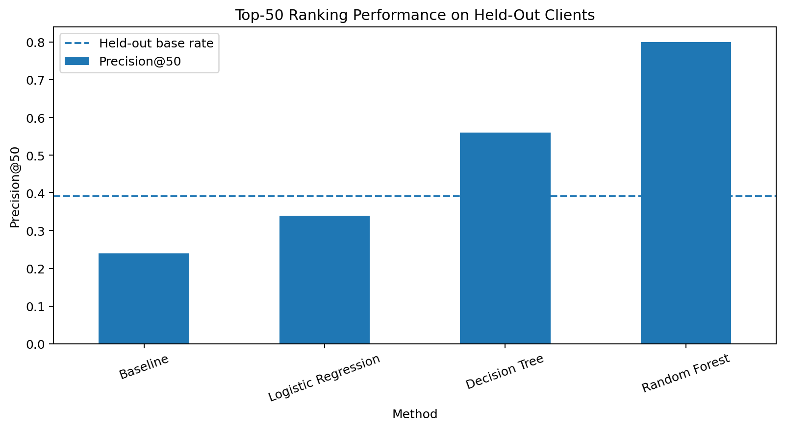
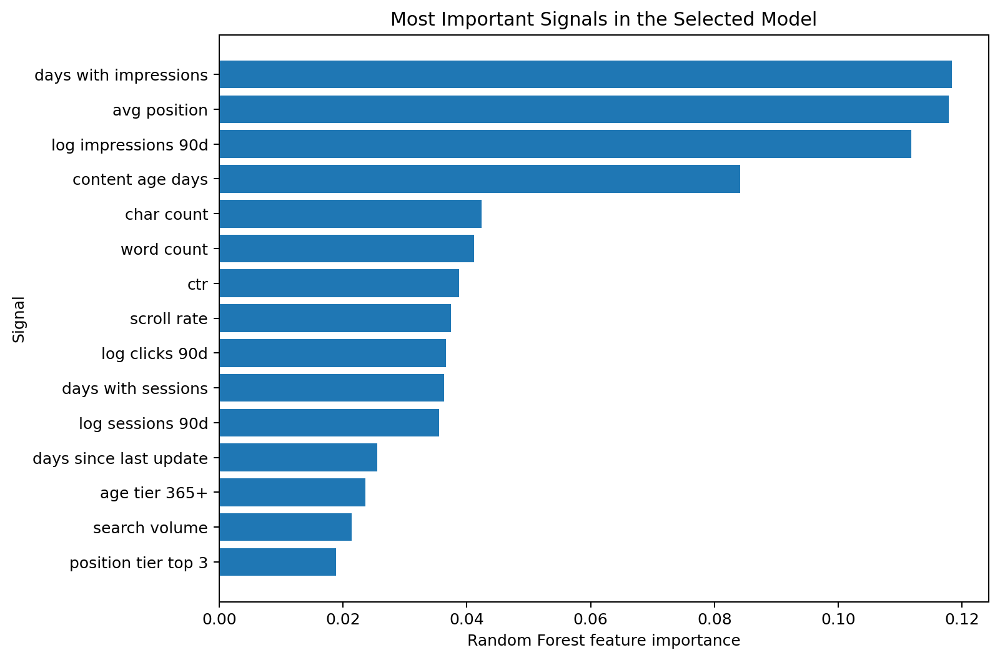
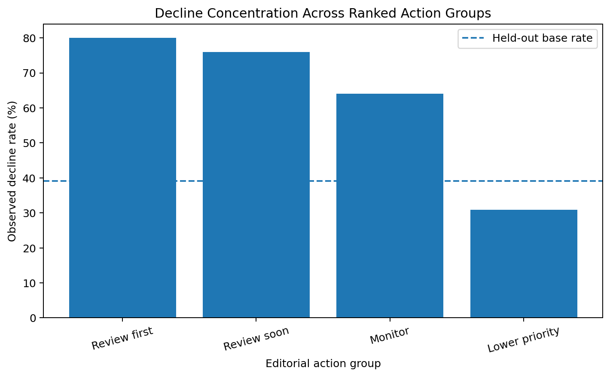

This project investigates whether historical search-performance, content, engagement, freshness, and ranking signals can be used to prioritize pages for editorial content-refresh review. The analysis uses 30,000 anonymized content pages from the FlyRank ML Internship dataset and evaluates models using a client-level holdout to reduce leakage between training and test data. A transparent baseline, Logistic Regression, Decision Tree, and Random Forest were compared using ranking and discrimination metrics including Precision@50, ROC-AUC, and PR-AUC.
Random Forest produced the strongest held-out performance, reaching 80% Precision@50, compared with 24% for the baseline and a held-out decline base rate of 39.1%. The resulting model is used to generate a ranked editorial queue rather than automate content changes. The findings are presented as decision-support evidence and do not establish causal search-ranking factors.
Content teams often manage more pages than they can manually review at the same time. Reviewing every page equally creates an allocation problem: editorial capacity may be spent on relatively stable pages while more important declining pages receive attention too late.
The research question for this capstone is:
The unit of analysis is an anonymized content page. The system produces a ranked refresh-opportunity score. A false positive may waste editorial time on a page that did not require urgent attention, while a false negative may leave a genuinely declining page unnoticed.
The analysis uses the public-safe
content_refresh_anonymized.csv dataset included with the FlyRank ML Internship
repository. It contains 30,000 rows and 44 source columns, with each row
representing one anonymized content item.
Available signals include search visibility, clicks, sessions, users, engagement, CTR, average search position, content length, content age, freshness, search volume, competition, and historical 90-day activity.
The binary target is defined as:
is_declining_label = 1 when
trend_direction == "down", otherwise 0.
Across the complete dataset, 54.21% of pages carry the declining label.
trend_direction was excluded because it directly defines the target.trend_pct was excluded because it is closely derived from the same outcome.content_id was used only as an anonymized row identifier.client_id was used only for grouped validation.The project treats refresh prioritization as a supervised ranking/classification task. Each learned model estimates the probability that a page belongs to the declining class. These probabilities are then used as ranking scores.
Instead of randomly splitting pages, the evaluation holds out entire anonymized clients. Of 32 clients, 26 were used for training and 6 were reserved for testing.
The model uses search, engagement, content, age, freshness, and ranking-position signals. Highly skewed traffic variables such as impressions, clicks, and sessions were log-transformed. Missing numeric values were imputed, categorical missing values were represented as unknown, and categorical features were one-hot encoded.
The transparent baseline combines four components:
Three learned models were then compared against the same baseline: Logistic Regression, Decision Tree, and Random Forest.
| Model | ROC-AUC | PR-AUC | Precision@20 | Precision@50 | Precision@100 | Lift@50 |
|---|---|---|---|---|---|---|
| Baseline | 0.627 | 0.468 | 0.150 | 0.240 | 0.360 | 0.61× |
| Logistic Regression | 0.703 | 0.521 | 0.350 | 0.340 | 0.420 | 0.87× |
| Decision Tree | 0.740 | 0.570 | 0.600 | 0.560 | 0.560 | 1.43× |
| Random Forest | 0.756 | 0.647 | 0.850 | 0.800 | 0.810 | 2.05× |

Random Forest improved Precision@50 from 24% for the baseline to 80%, an absolute improvement of 56 percentage points.
The Random Forest relied most strongly on historical visibility, search position, traffic persistence, and content-age signals.

The strongest individual features were days with impressions, average search position, log-transformed 90-day impressions, and content age. Secondary signals included content length, CTR, scroll rate, clicks, sessions, freshness, and search volume.
This study is observational. The target is derived from an observed trend label in the supplied dataset, so the model identifies associations rather than causal explanations.
The selected Random Forest was used to rank all 2,325 pages in the held-out client set. The ranking was converted into practical editorial review groups.
| Action Group | Pages | Observed Decline Rate | Average Model Score |
|---|---|---|---|
| Review First | 50 | 80.0% | 0.792 |
| Review Soon | 150 | 76.0% | 0.754 |
| Monitor | 300 | 64.0% | 0.715 |
| Lower Priority | 1,825 | 30.8% | 0.436 |

Editors should begin with the highest-ranked pages and then combine the model score with business value, page context, search intent, and editorial judgment. The queue sizes are practical workflow thresholds rather than statistically optimized cutoffs.
The complete analysis is implemented in the capstone notebook within the repository:
work/notebooks/capstone.ipynb
The workflow can be reproduced by installing the dependencies in
requirements.txt and running the notebook from top to bottom.
The modeling pipeline uses a fixed random seed of 42.
Supporting public-safe outputs are also available in the
docs/assets/ folder, including:
Repository: github.com/SyedaNehaBatool12/flyrank-ml-internship
Built on the FlyRank ML Internship dataset .
Dataset credit is included as standard research practice. All published results use anonymized or aggregated information, and no client-identifying information is presented.